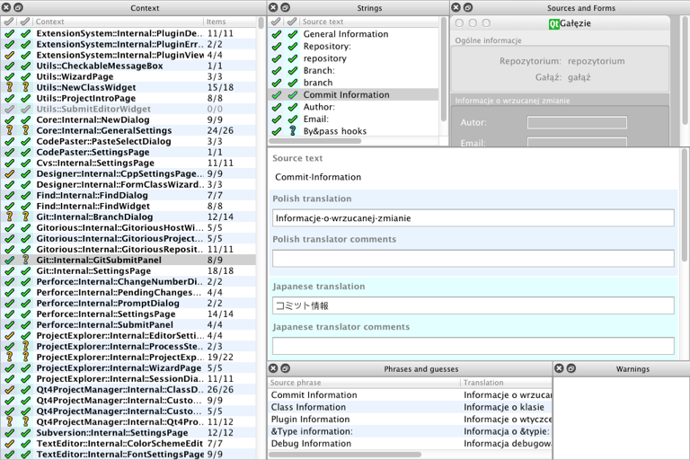

Translating multiple languages simultaneously
You can load and edit multiple translation files simultaneously. The following screen shot displays Polish and Japanese translation files loaded.

The translation area has color-coded text editing areas for both Polish and Japanese. The Context view and the Strings view have color-coded status columns for each language.
The Items column in the Context view combines the values for both languages. If the number of translatable strings does not match the number of accepted strings, either or both languages have strings that you need to translate or accept. The Strings view shows the translation acceptance state of each string for each language.